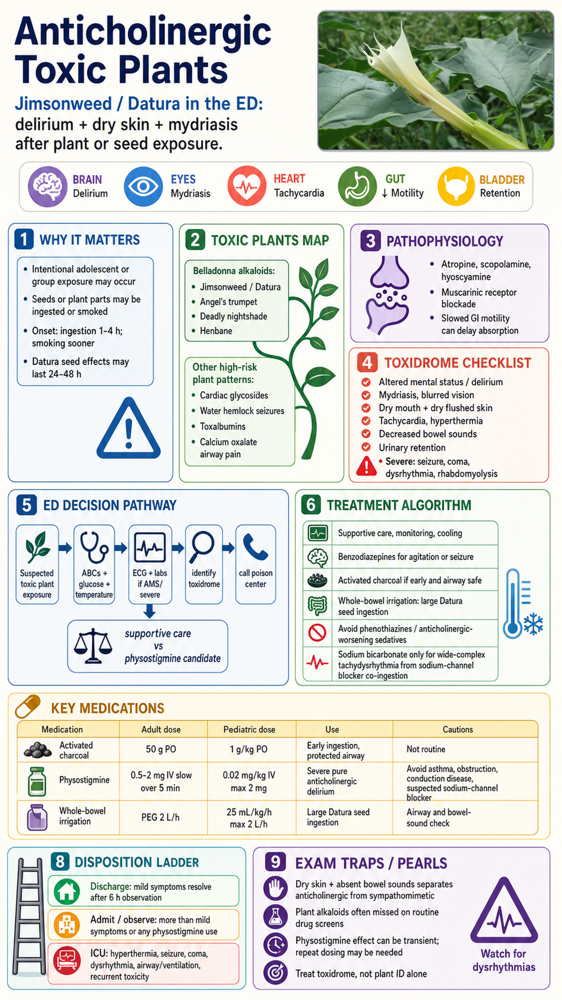

image_gen generated the base poster; a real Datura stramonium flower photo was composited into the reserved photo frame. No post-generation medical text patching was applied. Flower photo: Wikimedia Commons file page, CC0/public domain dedication as stated there.